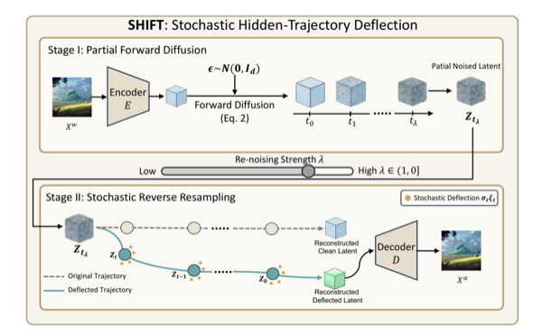

SHIFT: Stochastic Hidden-Trajectory Deflection for Removing Diffusion-based Watermark
NeurIPS 2026 Workshop STODY, Oral Presentation

Abstract
Diffusion-based watermarking methods embed verifiable marks by manipulating the initial noise or the reverse diffusion trajectory. However, these methods share a critical assumption: verification can succeed only if the diffusion trajectory can be faithfully reconstructed. This reliance on trajectory recovery constitutes a fundamental and exploitable vulnerability. We propose Stochastic Hidden-Trajectory Deflection (SHIFT), a training-free attack that exploits this common weakness across diverse watermarking paradigms. SHIFT leverages stochastic diffusion resampling to deflect the generative trajectory in latent space, making the reconstructed image statistically decoupled from the original watermark-embedded trajectory while preserving strong visual quality and semantic consistency. Extensive experiments on nine representative watermarking methods spanning noise-space, frequency-domain, and optimization-based paradigms show that SHIFT achieves 95%--100% attack success rates with nearly no loss in semantic quality, without requiring any watermark-specific knowledge or model retraining.
BibTeX
@inproceedings{gao2026shift,
title = {SHIFT: Stochastic Hidden-Trajectory Deflection for Removing Diffusion-based Watermark},
author = {Bao, Rui and Gao, Zheng and Li, Xiaoyu and Feng, Xiaoyan and Song, Yang and Jiang, Jiaojiao},
booktitle = {NeurIPS 2026 Workshop STODY},
note = {Oral Presentation},
year = {2026},
}